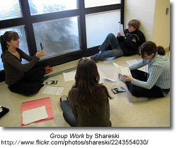
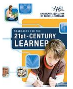
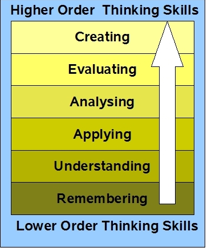

Information Literacy: A Definition
Information literacy or life long abilities, behaviors and attitudes.
A New Information Environment

The Traditional Definition: Still Relevant?
The Association of Colleges and Libraries (2006) defines an information literate citizen as one who is “able to recognize when information is needed and has the ability to locate, evaluate and use effectively the needed information”.
Within recent years the way that we access information and the tools that we use to process information has changed dramatically. Students no longer need to rely on teachers, textbooks and libraries to access the information they need to make decisions or complete assignments. They live in a world of immediate communication where they can find the answers to the questions that intrigue them. As well, the read/write web, also known as Web 2.0, where individuals have the opportunity to be not merely consumers of information but also producers requires educators to reevaluate the skills that students need to be successful learners and ultimately contributing citizens. The slide presentation below is an excellent introduction to how the new read/write web is changing the tools and the skills students require to find, use and share information in the 21st Century.

Writers, thinkers and educators are attempting to respond to this new information environment by asking the question, "in a world radically changed by new and emerging technology what are the skills that will allow our students to find, retrieve, analyze, and use information?"
Will Richardson (Web-logged) challenged readers to list what our kid's futures will require them to be. A cohort collected the many responses to his question. The list is an ideal way to begin to review the skills that our students require for success in the 21st Century and to begin to craft a new definition of information literacy.
New Definitions
 Doug Johnson in his post, Life Long Behaviors, Abilities and Attitudes says,
Doug Johnson in his post, Life Long Behaviors, Abilities and Attitudes says,
Call them what you will - dispositions, habits of mind , conceptual skills , life-long learning behaviors, high EQ traits - the educational spotlight is turning to abilities that are incredibly important and very tough to quantify. You can hardly turn around without bumping into a set of these things:
New theories of learning such as Connectivism, and revisions of information literacy models, skills and standards including Big 6 , WebQuests, Bloom’s Taxonomy , National Educational Technology Standards (NETS), The Partnership for 21st Century Life and Career Skills and the American Association for School Libraries’ (AASL) Standards for the 21st Century Learner , express the new literacies – the basic foundations that are essential for success in what Thomas Friedman (2005) has called the flat world and Daniel Pink (2006) has coined the conceptual age.
And in February 2008, the NCTE adopted the statement, Towards a Definition of 21st- Century Literacies , which includes the following"
Twenty-first century readers and writers need to
- Develop proficiency with the tools of technology
- Build relationships with others to pose and solve problems collaboratively and
cross-culturally - Design and share information for global communities to meet a variety of
purposes - Manage, analyze and synthesize multiple streams of simultaneous
information - Create, critique, analyze, and evaluate multi-media texts
Attend to the ethical responsibilities required by these complex environments
The links below explore each of these new theories, models and revisions of models in more detail. An understanding of how information literacy is constantly changing and evolving is essential for beginning the process of constructing a school-wide information literacy program.
Standards for the 21st-Century Learner
AASL Standards for the 21st-Century Learner
The standards adopted in 2008 by the American Association for School Libraries describe how learners use skills, resources, and tools to
- inquire, think critically, and gain knowledge;
- draw conclusions, make informed decisions, apply knowledge to new situations, and create new knowledge;
- share knowledge and participate ethically and productively as members of our democratic society;
- pursue personal and aesthetic growth.
NETS
NETS - National Education Technology Standards for Students

- Creativity and Innovation
- Communication and Collaboration
- Research and Information Fluency
- Critical Thinking, Problem Solving, and Decision Making
- Digital Citizenship
- Technology Operations and Concepts
NETS Booklet (pdf)
Blooms Revised Taxonomy
In the 1990's, a former student of Bloom, Lorin Anderson, revised and published a revision of the Taxonomy in 2001. A key change is the use of verbs rather than nouns for each of the categories and a rearrangement of the sequence within the taxonomy.
Bloom's Digital Taxonomy by Andrew Churches
This is an incredible wiki page in which the author shows how emerging technologies can be used at each stage of the taxonomy. He also provides pdf rubrics that can be used to assess the use of the tools.
All things to do with Bloom's revised taxonomy - posters, powerpoints and lessons.
A Whole New Mind
A Whole New Mind by Daniel Pink
 A post from Doug Johnson outlines Pink' s thesis in A Whole New Mind and the necessary 'right-brain' senses we need in what Pink calls the Conceptual Age.
A post from Doug Johnson outlines Pink' s thesis in A Whole New Mind and the necessary 'right-brain' senses we need in what Pink calls the Conceptual Age.
Pink acknowledges the outsourcing trend (Asia), as well as two other trends he labels Abundance and Automation. He suggests that readers ask themselves three questions about their jobs:
1. Can someone overseas do it cheaper?
2. Can a computer do it faster?
3. Am I offering something that satisfies the nonmaterial, transcendent desires of an abundant age? (Are you not just making toilet brushes, but toilet brushes that satisfy the user’s aesthetic sensibilities as well?)As a result of these trends, he believes we are shifting from the Information Age to the Conceptual Age. Successful players in this new economy will increasing be required to develop and use the right-brain abilities of high concept (seeing the larger picture, synthesizing information) and high touch (being empathetic, creating meaning). Happy news, perhaps, for those of us who never were all that good at the left-brain stuff in the first place.
More specifically, he suggests we work toward developing in ourselves (and I hope by implication, our students), six right brain “senses,” to complement our left-brain, analytic skills. He suggests we will need realize the value of:
1. Not just function, but also DESIGN
2. Not just argument, but also STORY.
3. Not just focus, but also SYMPHONY.
4. Not just logic, but also EMPATHY.
5. Not just seriousness, but also PLAY.
6. Not just accumulation, but also MEANING.
Doug Johnson revisits Pink's premise and adds a seventh sense, learning. He then goes to illustrate how schools might emphasis the six - now seven senses.
In the (Feb 2006) issue of School Administrator Daniel Pink interviews Tom Friedman on Education in the ‘Flat World’
According to Friedman,
"the greatest economic competition in the world going forward is not going to be between countries and countries. And it’s not going to be between companies and companies. The greatest economic competition going forward is going to be between you and your own imagination. Your ability to act on your imagination is going to be so decisive in driving your future and the standard of living in your country. So the school, the state, the country that empowers, nurtures, enables imagination among its students and citizens, that’s who’s going to be the winner."
Participatory Culture
Confronting the Challenges of Participatory Culture: Media Education for the 21st Century,
 The paper first identifies three concerns which require the need for "pedagogical interventions":
The paper first identifies three concerns which require the need for "pedagogical interventions":
The Participation Gap — the unequal access to the opportunities, experiences, skills, and knowledge that will prepare youth for full participation in the world of tomorrow
The Transparency Problem — The challenges young people face in learning to see clearly the ways that media shape perceptions of the world.
The Ethics Challenge — The breakdown of traditional forms of professional training and socialization that might prepare young people for their increasingly public roles as media makers and community participants.
The majority of the report addresses 11 "new skills" students need to be fully successful in the social networking environment:
- Play — the capacity to experiment with one’s surroundings as a form of problem-solving
- Performance — the ability to adopt alternative identities for the purpose of improvisation and discovery
- Simulation — the ability to interpret and construct dynamic models of real-world processes
- Appropriation — the ability to meaningfully sample and remix media content
- Multitasking — the ability to scan one’s environment and shift focus as needed to salient details.
- Distributed Cognition — the ability to interact meaningfully with tools that expand mental capacities
- Collective Intelligence — the ability to pool knowledge and compare notes with others toward a common goal
- Judgment — the ability to evaluate the reliability and credibility of different information sources
- Transmedia Navigation — the ability to follow the flow of stories and information across multiple modalities
- Networking — the ability to search for, synthesize, and disseminate information
- Negotiation — the ability to travel across diverse communities, discerning and respecting multiple perspectives, and grasping and following alternative norms.
Connectivism
A Learning Theory for a New Age
George Siemens , Associate Director with the Learning Technologies Centre at University of Manitoba and author of Knowing Knowledge , posits a theory that places learning within networks. “Including technology and connection making as learning activities begins to move learning theories into a digital age. We can no longer personally experience and acquire learning that we need to act. We derive our competence from forming connections"
During a Women of the Web 2.0 skypecast Siemens (April 3, 2007) explains connectivism as “learning as network creation” We live in an age in which information becomes impossible to physically manage or hold in our heads. Instead our knowledge, our understandings, our creations are distributed across a system, each contribution becoming a node on the network. The ability to see connections between fields, ideas, patterns and concepts is essential because learning occurs when connections are made between the nodes on the network. Continuous learning happens through the nurturing and maintenance of connections.
Connectivism’s eight principles as described by Seimens, provide a foundation on which we can begin to see learning as more than that which resides in the individual.
- Learning and knowledge rests in diversity of opinions.
- Learning is a process of connecting specialized nodes or information sources.
- Learning may reside in non-human appliances.
- Capacity to know more is more critical than what is currently known
- Nurturing and maintaining connections is needed to facilitate continual learning.
- Ability to see connections between fields, ideas, and concepts is a core skill.
- Currency (accurate, up-to-date knowledge) is the intent of all connectivist-learning activities.
- Decision-making is itself a learning process. Choosing what to learn and the meaning of incoming information is seen through the lens of a shifting reality. While there is a right answer now, it may be wrong tomorrow due to alterations in the information climate affecting the decision.
Sharon Peter's Post Basic Connectivism - Or “Connectivism for Dummies” illustrates the basic concepts of connectivism.
More information can be followed at George Siemens' Connectivism Blog and Elearnspace Blog.
Podcast: George Siemens and Michael Wesch Talk About Future Learning (30 Minutes)
Partnership for 21st Century Skills

The organization, Partnership for 21 Century Skills, advocates for the inclusion of life and career skills into all aspects of education.
Life and Career Skills
Today’s life and work environments require far more than thinking skills and content knowledge. The ability to navigate the complex life and work environments in the globally competitive information age requires students to pay rigorous attention to developing adequate life and career skills.
- Flexibility & Adaptability
- Initiative & Self-Direction
- Social & Cross-Cultural Skills
- Productivity & Accountability
- Leadership & Responsibility
The World is Flat
 MIT Thomas Friedman Lecture - this video podcast introduces you to Friedman’s concept of Globalization 3.0. It’s a new era of globalization that gained momentum just a few years ago, when “a global, web-enabled platform,” enabling the “sharing of knowledge and work, irrespective of time, distance, geography and increasingly even language,” started flattening the world and empowering individuals anywhere to become players in the global economy. (Open Culture)
MIT Thomas Friedman Lecture - this video podcast introduces you to Friedman’s concept of Globalization 3.0. It’s a new era of globalization that gained momentum just a few years ago, when “a global, web-enabled platform,” enabling the “sharing of knowledge and work, irrespective of time, distance, geography and increasingly even language,” started flattening the world and empowering individuals anywhere to become players in the global economy. (Open Culture)
| “ Our parents were telling us: “Finish your dinner. There are children in China and India who are starving.” Now, we should be warning our children: “Finish your homework. There are students in China and India who want your job.” |
From Wikipedia - the list of Friedman's Ten Flatteners that will ultimately impact on education:
- Collapse of Berlin Wall
- Netscape: Netscape and the Web broadened the audience for the Internet
- Workflow software: The ability of machines to talk to other machines with no humans involved.
- Open sourcing: Communities uploading and collaborating on online projects.
- Outsourcing: Friedman argues that outsourcing has allowed companies to split service and manufacturing activities into components
- Offshoring: Manufacturing's version of outsourcing.
- Supply chaining: Wal-Mart is the best example of a company using technology to streamline item sales, distribution, and shipping.
- Insourcing: UPS is a prime example for insourcing, in which the company's employees perform services--beyond shipping--for another company
- In-forming: Google and other search engines are the prime example.
- "The Steroids": Personal digital devices like mobile phones, iPods, personal digital assistants, instant messaging, and voice over IP (VoIP) .
Virtual Education explains each of Friedman's ten flatteners and then discusses what we need to learn in a flat world.